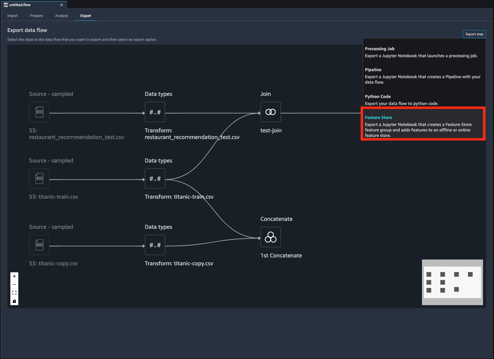

Data sources and ingestion
There are multiple ways to bring your data into Amazon SageMaker Feature Store. Feature Store offers a single
API call for data ingestion called PutRecord that enables you to ingest data in
batches or from streaming sources. You can use Amazon SageMaker Data Wrangler to engineer features and then
ingest your features into your Feature Store.
You can also use Amazon EMR for batch data ingestion through a Spark connector.
Topics
Stream ingestion
You can use streaming sources such as Kafka or Kinesis as a data source where features
are extracted from there and directly fed to the online feature store for training,
inference or feature creation. Records can be pushed into the feature store by calling
the synchronous PutRecord API call. Since this is a synchronous API call it
allows small batches of updates to be pushed in a single API call. This enables you to
maintain high freshness of the feature values and publish values as soon an update is
detected. These are also called streaming features.
Data Wrangler with Feature Store
Data Wrangler is a feature of Studio that provides an end-to-end solution to import, prepare, transform, featurize, and analyze data. Data Wrangler enables you to engineer your features and ingest them into a feature store.
In Studio, after interacting with Data Wrangler, choose the Export tab, choose Export Step, and the choose Feature Store, as shown in the following screenshot. This exports a Jupyter notebook that has all the source code in it to create a Feature Store feature group that adds your features from Data Wrangler to an offline or online feature store.

After the feature group has been created, you can also select and join data across multiple feature groups to create new engineered features in Data Wrangler and then export your data set to an S3 bucket.
For more information on how to export to Feature Store, see Export to SageMaker Feature Store.